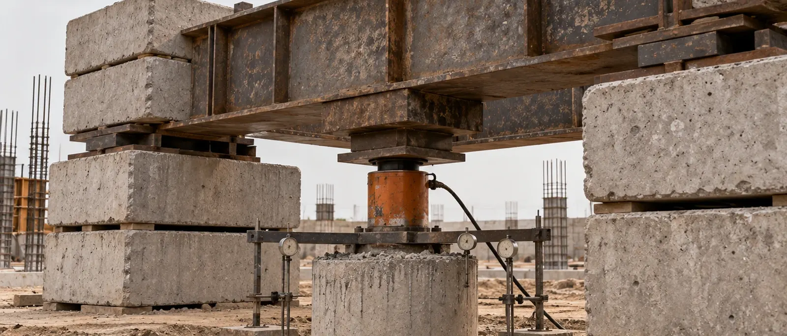

Pile Load Testing and Pile Integrity Testing: Understanding the Difference
Capacity versus soundness: when a project needs a static or dynamic load test, when an integrity test is enough, and how the specification decides which a project needs.
By the PETALS engineering team
Technically reviewed by [Reviewer name]

Two different questions
A pile load test asks: how much can this pile carry, and how much will it settle? A pile integrity test asks: is this pile built as designed, continuous and without defects? Both matter, but they answer different questions and are not substitutes for each other.
Load testing
In a static load test, load is applied to the pile head in stages, using a jack against a reaction beam or kentledge, and settlement is recorded at each stage. It is the most direct measure of capacity. Initial tests on trial piles confirm the design before working piles are installed; routine tests check a share of the working piles.
Dynamic load tests strike the pile with a heavy drop weight and record strain and acceleration at the head. Analysis estimates capacity in a fraction of the time and cost of a static test, which makes it useful for testing more piles.
Integrity testing
A low-strain pile integrity test (PIT) taps the pile head with a small hammer and records the reflected stress wave. A clean reflection from the toe indicates a continuous pile; an early reflection suggests a change in section, a crack or a defect. It takes minutes per pile, so it can cover a large share of the piles, where pile heads are accessible and prepared and the pile type and length suit the method.
Cross-hole sonic logging sends ultrasonic signals between tubes cast into the pile and gives a more detailed picture of concrete quality along its length, at the cost of planning the tubes before casting.
What the results look like
Load test. Settlement stays small up to the design load and increases beyond it. The curve shows the pile has the margin the design assumed.Sound pile. The wave travels down the pile and reflects clearly from the toe at the expected length. No significant reflections in between.Possible defect. A strong reflection at about 6 m, well above the toe, suggests a change in section or a crack. The pile is flagged for further investigation.
A load test measures how the tested piles behave. An integrity test helps check that other piles were built consistently.
Side by side
| Load testing | Integrity testing | |
|---|---|---|
| Question | Capacity and settlement | Continuity and soundness |
| Methods | Static (compression, tension, lateral), dynamic, bi-directional | Low-strain PIT, cross-hole sonic logging, thermal integrity |
| Time per pile | A day or more for static; hours for dynamic | Minutes for PIT |
| Coverage | A few selected piles | Many piles, where access and pile geometry allow |
| Limitation | Expensive, so only a sample is tested | Does not measure capacity |
Which one, and when
The right combination depends on the specification, pile type, loads and project requirements. On many projects, initial load tests verify design assumptions early, integrity tests on working piles help catch construction anomalies while they can still be addressed, and routine load tests confirm working pile behaviour. On others, the specification calls for only some of these.
The right number and type of tests depends on the pile type, the ground, the loads and the specification. The testing programme should be agreed before piling starts, not after.
Key takeaways
- Load tests measure capacity; integrity tests check soundness.
- Neither replaces the other; the specification sets which are needed.
- Initial load tests confirm the design before working piles go in.
- Integrity tests are quick, but coverage depends on access, pile type and geometry.